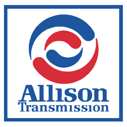
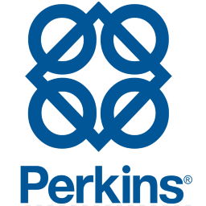

Veículos ComerciaisDiagnóstico OEM

-
 VOLVO Volvo/Mack PTT VCADS Pro
VOLVO Volvo/Mack PTT VCADS Pro -
 CUMMINS Cummins INSITE
CUMMINS Cummins INSITE -
 CAT CAT ET Electronic Technician
CAT CAT ET Electronic Technician -
 DETROIT Detroit DDDL & DDRS
DETROIT Detroit DDDL & DDRS - HINO HINO Diagnostic eXplorer
- ISUZU ISUZU IDSS
- NISSANUD Nissan UD
- JOHN DEERE Service ADVISOR EDL
-

ALLISON Allison DOC - BENDIX Bendix ACOM
- EATON Eaton ServiceRanger
-
 FREIGHTL Freightliner ServiceLink
FREIGHTL Freightliner ServiceLink - INTERNAL International ServiceMAXX and more…
- WABCO WABCO Toolbox
-

PERKINS Perkins OLYMPIAN EST - MAN
MAN-Cats II - SCANIA
Scania SDP3 - JCB
JCB ServiceMaster - DEUTZ
DEUTZ Serdia